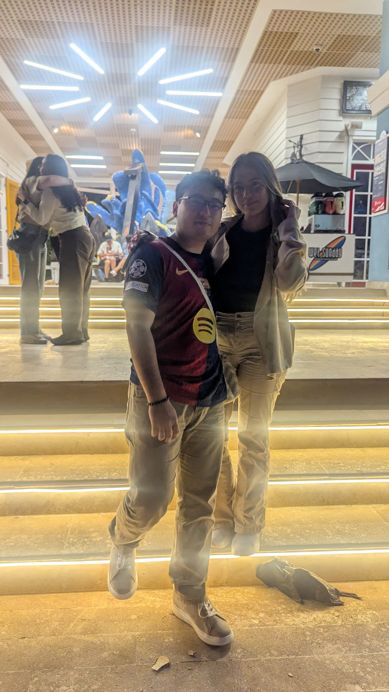

Cusco, Perú
Un lugar lleno de cultura, paisajes increíbles y momentos especiales que merecen su propia galería.
 Centro histórico
Centro histórico
 Paisajes
Paisajes
 Recuerdo especial
Recuerdo especial
Nuestro mapa de recuerdos
Una galería especial de nuestros viajes juntos. Desde las calles mágicas de Cusco y la energía de Barranquilla, hasta el próximo sueño: Santa Marta.
Haz clic en cada punto para ir a su galería.
Puedes cambiar las fotos, los textos y los colores cuando quieras.
Un lugar lleno de cultura, paisajes increíbles y momentos especiales que merecen su propia galería.
Centro histórico
Paisajes
Recuerdo especial
Un viaje lleno de energía, calor y lugares que valieron completamente la pena.
 Costas y ciudad
Costas y ciudad
 Paseos
Paseos

Momentos juntosUn espacio para lo que viene.
Todavía no es un recuerdo, pero ya tiene su lugar aquí. Cuando hagan el viaje, estas tarjetas podrán reemplazarse por sus fotos reales.
Que al hacer clic en una imagen se abra en grande, estilo galería moderna.
Mostrar los viajes en orden cronológico con fechas y pequeñas anécdotas.
Marcar Cusco, Barranquilla y Santa Marta en un mapa bonito.
Agregar un fondo suave o transiciones delicadas para que se sienta más especial.